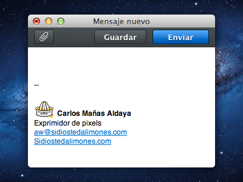
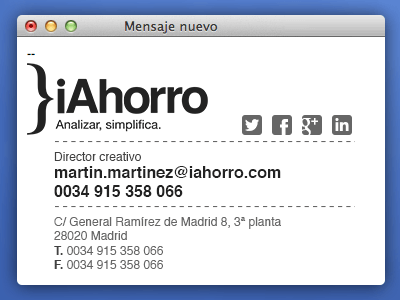
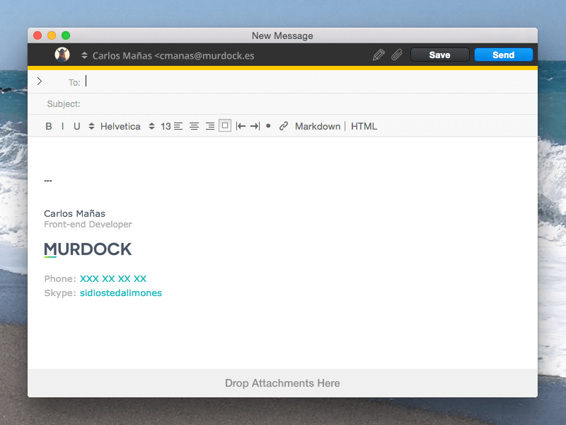
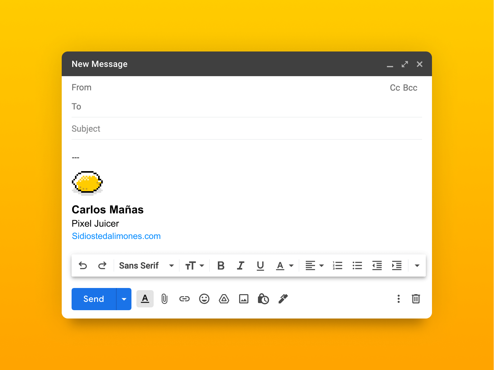
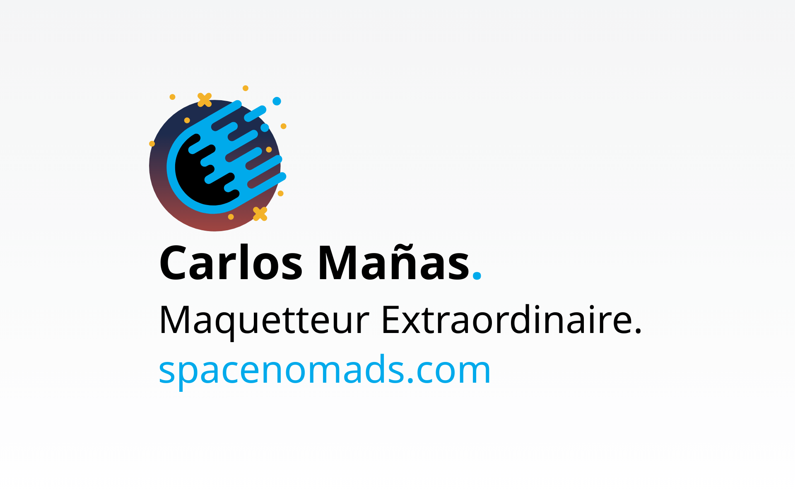
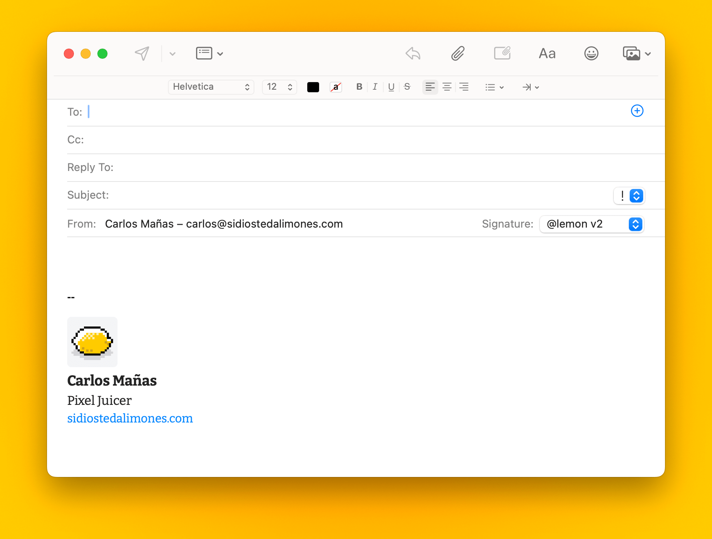
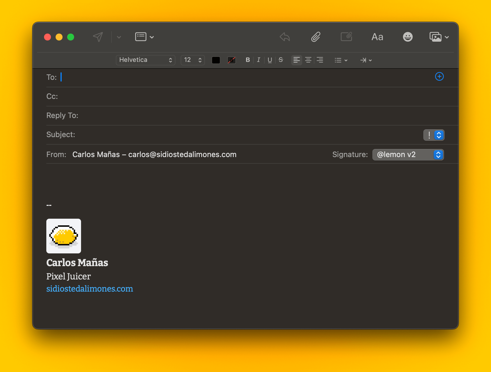
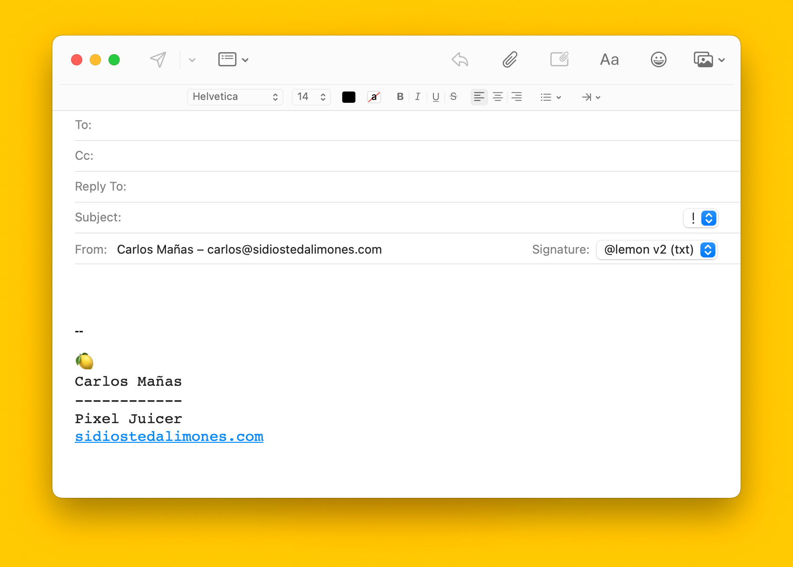

Firmas de email
Volver a la homeUna de las cosas que más disfruto de lo que sé hacer es diseñar y maquetar firmas de mails.
Me gusta hacer la distinción entre «lo que sé hacer» y mi trabajo como front.
Son dos cosas distintas que se hacen con las mismas herramientas.
Igual es mi guilty pleasure de esos porque maquetar para mail es una mireda indecible, PERO.
Hacer estas pequeñas piezas es como ese espacio que puedo disfrutar de otra manera, sin prisa o presión.
Digo que son «pequeñas» porque la propia información de la firma ya manda lo suficiente sobre la estructura, y no tiene sentido que haya muchos elementos. Por eso creo que son muy agradecidas de diseñar.
Para web sería otra historia, pero en mail vamos muy limitades si quieres que se vea en todos los clientes de correo.
En 27 años creo que es el formato que más he disfrutado con diferencia. También el que he hecho más por gusto y con más tiempo para dedicarle.
Estas son algunas de las primeras que hice:
- 
- 
- 
Muy al principio se hicieron verdaderas fantasías que sólo se podían resolver como imágenes si querías que se viese medio parecido en los diferentes clientes de correo. A mi siempre me gustó invertir tiempo en algún detalle gráfico y resolver el resto con texto, pero en mail nada es gratis.
Ahora tenemos las pantallas con alta densidad de pixels y para que las imágenes salgan definidas necesitamos imágenes más grandes a las que les forzamos el tamaño, generalmente vale con el doble del tamaño final.
Para estas últimas, esto del tamaño de las imágenes ha sido un poco tricky porque uso Apple Mail, y Apple lo hace todo fácil, pero a su manera.
Por si a alguien le sirve aquí cuentan cómo impedir que Apple Mail haga la imagen de la firma demasiado grande.
Y estas son las últimas que hice para Sidiostedalimones y para Spacenomads.
- 
- 
- 
- 
- 
Generador de firmas
En paralelo me estoy haciendo un generador de firmas al que puedas alimentar con plantillas y campos, pero eso es otra historia.